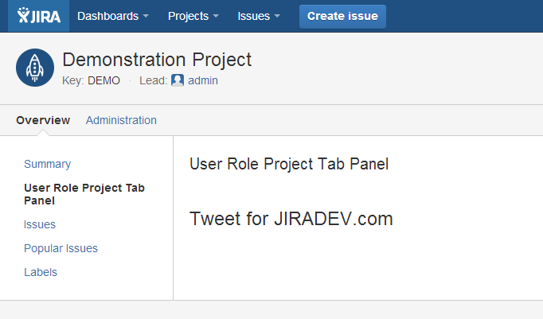
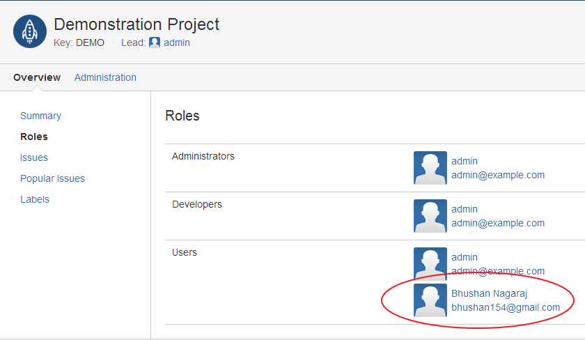

Requirement: Display a list of all the users on the project dashboard.
Open the project in your IDE and take a look at the atlassian-plugin.xml file. Notice that the project-tabpanel has a resource of type velocity defined. This file is located in your project's resource/templates/tabpanels folder. Edit this file and enter the text <h1>Tweet for JIRADEV.com</h1>
Also notice you src directory. The SDK has created a new java class named UserRoleProjectTabPanel.java in the package com.jiradev.jira.plugins.panels.project. This is where we will be writing code to implement our functionality.
Run JIRA using atlas-run command and create a demo project. Navigate to the project dashboard. And you should now see
the output displayed in the below screenshot.

package com.jiradev.jira.plugins.panels.project;
import com.atlassian.crowd.embedded.api.User;
import com.atlassian.jira.component.ComponentAccessor;
import com.atlassian.jira.project.Project;
import com.atlassian.jira.security.roles.ProjectRole;
import com.atlassian.jira.security.roles.ProjectRoleActors;
import com.atlassian.jira.security.roles.ProjectRoleManager;
import org.slf4j.Logger;
import org.slf4j.LoggerFactory;
import com.atlassian.jira.plugin.projectpanel.impl.AbstractProjectTabPanel;
import com.atlassian.jira.plugin.projectpanel.ProjectTabPanel;
import com.atlassian.jira.plugin.projectpanel.ProjectTabPanelModuleDescriptor;
import com.atlassian.jira.project.browse.BrowseContext;
import java.util.Collection;
import java.util.Map;
import java.util.TreeMap;
public class UserRoleProjectTabPanel extends AbstractProjectTabPanel implements ProjectTabPanel
{
private static final Logger log = LoggerFactory.getLogger(UserRoleProjectTabPanel.class);
private ProjectRoleManager projectRoleManager = ComponentAccessor.getComponent(ProjectRoleManager.class);
private TreeMap people = new TreeMap();
public Map createVelocityParams (BrowseContext ctx)
{
//Get the params object. This will hold all the values that can be accessed in the user-role-project-tab.properties file
Map params = super.createVelocityParams(ctx);
//Get the project object
Project project = ctx.getProject();
//Get all the project roles
Collection projectRoles = projectRoleManager.getProjectRoles();
//Iterate through each role and get the users associated with the role
for (ProjectRole projectRole : projectRoles){
ProjectRoleActors roleActors = projectRoleManager.getProjectRoleActors(projectRole, project);
people.put(projectRole.getName(),roleActors.getUsers());
}
params.put("people",people);
params.put("avatarService",ComponentAccessor.getAvatarService());
return params;
}
public boolean showPanel(BrowseContext context)
{
return true;
}
}
<div class="module">
<div class="mod-content">
<table class="aui">
#foreach( $entry in $people.entrySet() )
#if($entry.getValue().size() > 0)
<tr>
<td>$entry.getKey()
<td>
<table>
#foreach($user in $entry.getValue())
<tr>
<td>
<img height="48px" src="$avatarService.getAvatarAbsoluteURL($user,$user.getName(), $Avatar.Size.SMALL)"/>
</td>
<td style="padding: 3px;">
<a href="${requestContext.baseUrl}/secure/ViewProfile.jspa?name=$user.getName()">$user.getDisplayName()</a>
<br />
<a href="mailto:$user.getEmailAddress()">$user.getEmailAddress()
</td>
</tr>
#end
</table>
</td>
</tr>
#end
#end
</table>
</div>
</div>
Debugging your project
Create a new user and associate him to a role in a project. You should see the list of users in your project tab panel now.

Great. You have just completed writing a project tab panel plugin. In the next tutorial, we will implement the same functionality as a issue tab panel.
If you found this tutorial helpful, please show your support by tweeting about this tutorial.